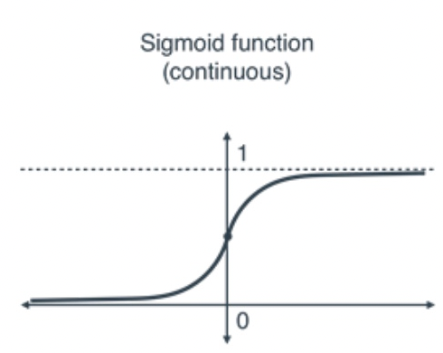
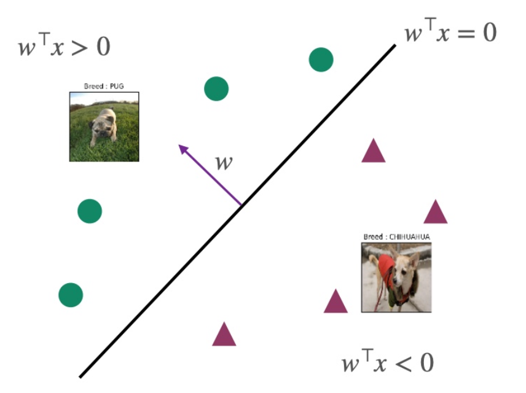
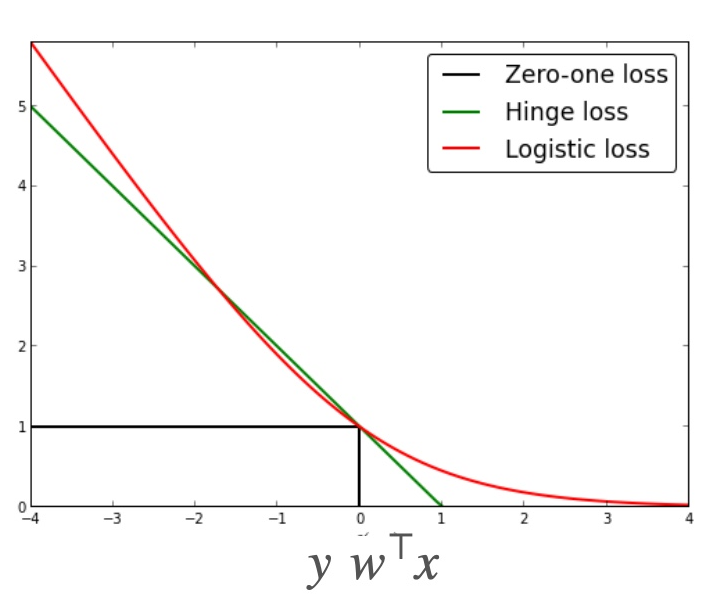

Logistic
使用方法：曲线拟合，分两个class，？基本只能处理数据点？
使用范围：都可以用。基本一根线能分就能分
input space
X=Rd
label space / output space（y的范围是0到1）
Y=[0,1]
hypothesis class F
F:={x↦sigmoid(w⊤x+b) ∣ w∈Rd,b∈R},where sigmoid(a)=1+exp(−a)1
注：ω：weight vector；b：bias

decision boundary
P(y=−1∣x)P(y=1∣x)=1+exp(−w⊤x)1+exp(w⊤x)=exp(w⊤x)的结果表示
如果w⊤x=0，则P(y=1∣x)=P(y=−1∣x)
如果w⊤x>0，则P(y=1∣x)>P(y=−1∣x)，label=1的概率更大
如果w⊤x<0，则P(y=1∣x)<P(y=−1∣x)，label=-1的概率更大
如果w⊤x=0，则P(y=−1∣x)P(y=1∣x)=exp(w⊤x)，此时恰好表示处于分界线上，见下图

loss function（推导ERM的方法1）
ℓ(f(x),y)={−log(f(x))−log(1−f(x))if y=1otherwise
带入f(x) 化简得到log(1+exp(−yωTx))
注：这是logistic loss，1代表预测错误，0代表预测正确

MAXIMUM LIKELIHOOD ESTIMATOR（推导ERM的方法2）
目的：为了得到最优化的结果，可以和loss function类比，一个是maximum 概率，一个是minimum 误差。
贝叶斯分布，在θ这个参数的情况下，把所有xi和yi带入之后的概率的乘积。
L^(θ)=P(S∣θ)=i=1∏mP(xi,yi∣θ)=−i=1∑mlog(1+exp(−yiw⊤xi))
S是train data。通过上式然后求log，可以推出ERM，具体推导见slides
Empricial Risk Minizer(convex)
R^(w)=m1i=1∑mlog(1+exp(−yiw⊤xi))
声明：此blog内容为上课笔记，仅为分享使用。部分图片和内容取材于课本、老师课件、网络。如果有侵权，请联系aursus.blog@gmail.com删除。